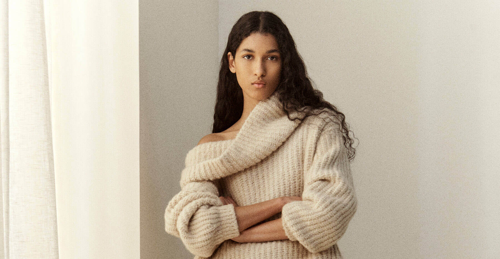
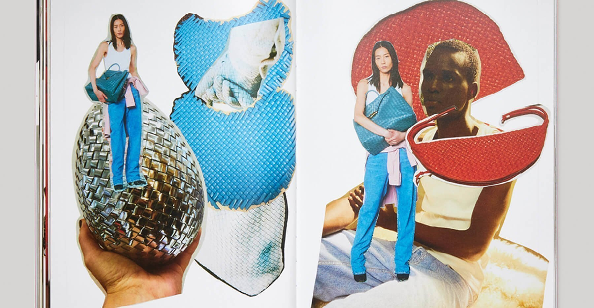
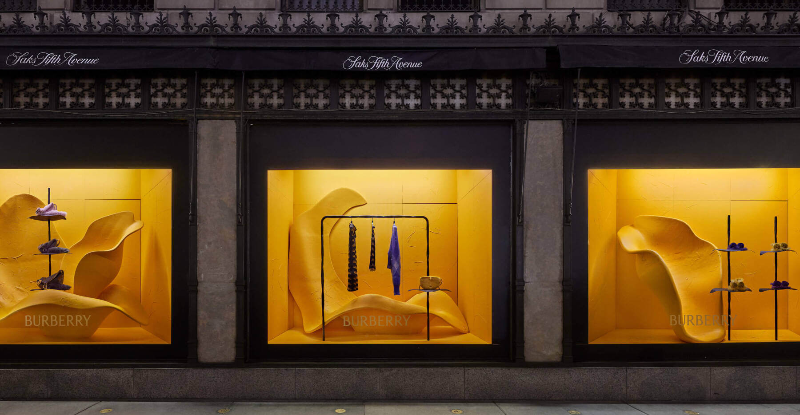

Loro Piana’s Ready For Cocooning Season
As in literally swaddling you in cashmere.
What’s a better way to keep your toes warm this winter than to wear socks made from the world’s finest cashmere? Or maybe a super soft sweatsuit is more your speed? For Loro Piana, that’s the intention behind their cozy Cocooning Collection, a line of incredibly luxurious knitted pieces that first launched last year. It returns this week and this time the brand is also introducing a men’s line as well. Made to get you through the coldest months, these pieces are made from vicuña goats that hail from the Andres and are beloved for their ultrafine, high quality cashmere.
Named Cocooning, because who wouldn’t want to swaddle themselves in cashmere once the temperatures drop, the line features elegant pieces that work equally as well whether you’re hunkering down by the fire or headed out in the cold. For her, you’ll find cardigans, shorts, wool jumpsuits and a shrug. For him, you’ll be able to get everything from sweaters to pants. The collection also includes socks and legwarmers as well, but the star accessories are definitely the slippers. Made from a fine silk yarn named Cashfur, they look and feel like big fluffy wearable clouds. With a palette of tans, natural whites, and burgundies (certain yarns are left undied to preserve their natural beauty) this collection is the epitome of the Loro Piana aesthetic; never look like you’re trying too hard.
Shop the Loro Piana Cocooning Collection online and select stores beginning October 12th

See Bottega Veneta’s Winter Fanzine
The collectible fanzine is a look into designer Matthieu Blazy’s moodboard.
Forget back to school shopping, the only book you need this year is Bottega Veneta’s newest fanzine. The fashion textbook, if you will, is an intimate look into the beautiful textures, woven leather, and pops of color that is the Winter 23 collection. Beginning with creative director Matthieu Blazy’s debut collection last year, the brand has released these collectible mementos of their collections that also happen to look very good on coffee tables.
Last season, the zine was all about Blazy’s muse Kate Moss, who wore one of the most memorable looks of the show. This winter, Blazy opted to commemorate the last of the ‘Italia trilogy,’ which subverts silhouette and plays with fabrics. Featuring campaign outtakes from this winter’s cinematic imagery, the book also has a few surprises, namely original fashion sketches by the British Cypriot designer Husseign Chalayan. Commissioned by Blazy, the art coupled with behind the scenes photos of longtime brand favorite Gaetano Pesce’s creations, it’s Bottega Veneta’s take on the moodboard.
Consisting of a Stracciatella-inspired patterned set, it’s reminiscent of a composition notebook, fitting for the curation of imagination and artistry inside. Perhaps, it may spark a bit of your own creative imagination as well. See for yourself below.

Images Courtesy of Burberry.
Window Shop Burberry’s Winter Collection Now
Saks Fifth Avenue is the first retail partner to welcome Daniel Lee’s debut.
If you’re in New York City, you might notice the windows of Saks Fifth Avenue look a little different this week. In honor of Daniel Lee’s debut Winter 2023 collection for Burberry, the department store has created a series of window installations featuring floral sculptures mixed in with pieces from the line including womenswear, menswear, shoes, bags, and other accessories. Not bad for a warm welcome.
Saks is the first partner to introduce the collection, so of course they had to go all out. Meant to be an immersive experience, the first thing you’ll notice is the bright yellow shade that fills the space. Called mimosa, it’s their seasonal hue. Also worth noting is the floral motif. As seen repeatedly in Lee’s debut, it’s brought to life inside the store. Rose sculptures dot the space, with shelves for products nestled within, as if your new handbag suddenly bloomed to life. If you want to see this in person, you can check it out through September 26th, or browse the collection online and at select Saks Fifth Avenue stores.